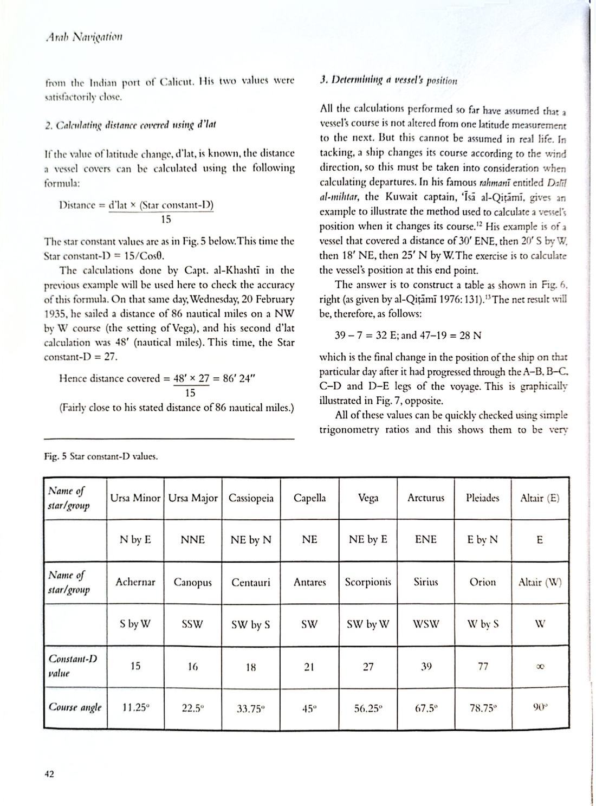

Published 2013 · Cover and pages 42, 43, 84, 89, 90 and the index
The Principles of Arab Navigation: Eissa, Abdulwahab and Yousef Al-Qatami
What it is
In the chapter on Arab navigation after 1850 the book uses a worked example from Eissa's Dalil Al-Muhtar, a four-stage voyage set by star courses, to show how a nakhuda fixed his position. In Dr Yacoub Al-Hijji's chapter on Alan Villiers, Abdulwahab bin Isa Al-Qatami is named as one of the true Kuwaiti navigators, his Certificate of Navigation of 2 July 1938 from HMS Shoreham is reproduced in colour, and Al-Hijji writes that had Villiers sailed with Abdulwahab Al-Qatami or other such nakhudas, «a more positive picture of Kuwaiti sailing and navigation would have emerged». Yousef bin Isa's boom Samhan is quoted from Villiers' Monsoon Seas.
Why it matters
A scholarly book on Arab navigation that uses Eissa's own method and names Abdulwahab among Kuwait's best navigators.
Page copies


Notes
The book's index lists these pages under al-Qitami, Abd al-Wahhab b. Isa (84, 89, 90), al-Qitami, Isa (42 and 43) and al-Qitami, Yusuf b. Isa (89). Only the first pages are shown here. Family members who sign in can see all 7 pages.
Others named
Sources
Anthony R. Constable and William Facey (eds), The Principles of Arab Navigation, Arabian Publishing, 2013.
How this text was made: Pages of a published book.
Open in the interactive site